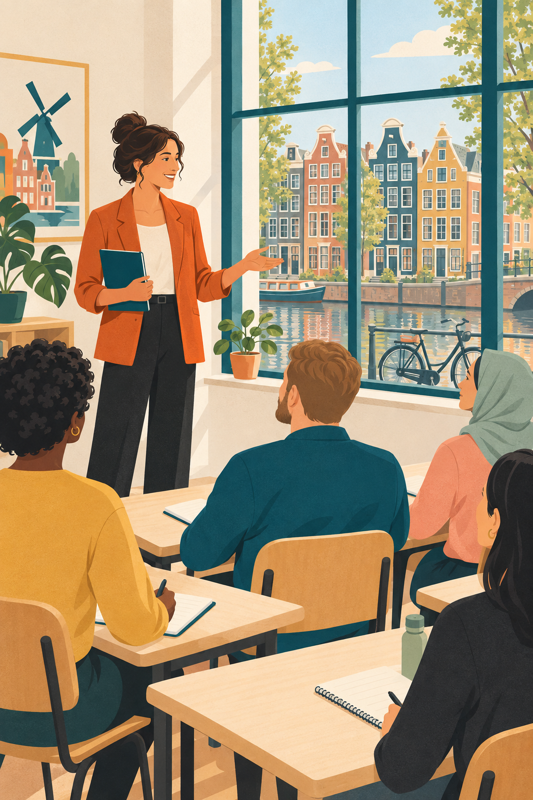

Coutinho · 3rd revised edition
Nederlands in gang
A personal redesign of the Dutch coursebook — the same content, typeset from scratch with original illustrations, recorded dialogues, hover translations and a practice deck built from each chapter's word list.

Not affiliated with the publisher. Nederlands in gang is © Coutinho. This is a personal study rebuild made alongside a purchased copy, shared for personal use. The publisher's own scans are not included here. If you are studying Dutch, buy the book — it comes with the audio this cannot replace.